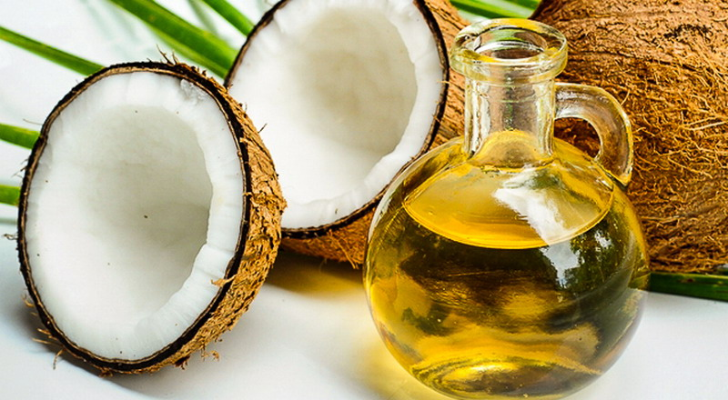
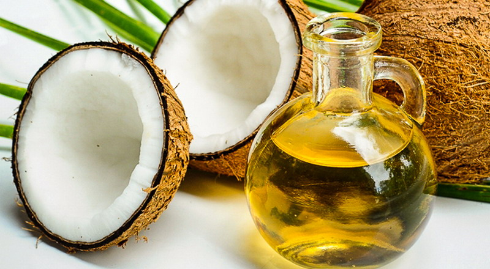

Kelapa
Kelapa adalah buah tropis yang berasal dari pohon kelapa (Cocos nucifera). Buah ini memiliki cangkang keras dan berbulu, dengan daging putih yang kaya akan air dan lemak. Kelapa sangat serbaguna, karena setiap bagian dari pohonnya dapat dimanfaatkan.
Dagingnya bisa dimakan segar, diolah menjadi santan atau minyak kelapa, sedangkan airnya bisa diminum langsung atau dijadikan minuman.


 
